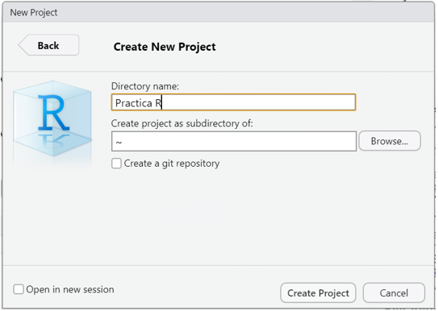

Menú | Descripción |
|---|---|
Archivo (File) | |
Ctrl + Shift + N | Crea un nuevo script |
Ctrl + O | Abre un script guardado |
Ctrl + S | Guarda el script activo |
Ctrl + W | Cierra el script activo |
Ctrl + Q | Sale del programa RStudio |
Edición (Edit) | |
Ctrl + F | Abre la ventana de búsqueda (para buscar palabras dentro de un script) |
Ctrl + L | Limpia la consola |
Código (Code) | |
Ctrl + Enter | Ejecuta la línea de código donde está situado el cursor |
Ctrl + Alt + R | Ejecuta todo el código del script activo |
Ctrl + Shift + N | Inserta nueva sección de código |
Sesión (Session) | |
Ctrl + Shift + H | Abre la ventana para establecer directorio de trabajo |
Ctrl + Shift + F10 | Reinicia la sesión de R |
Herramientas (Tools) | |
Alt + Shift + K | Abre la lista de ayuda de atajos de teclado |
Primeros pasos y generalidades
© 2025 Instituto Nacional de Epidemiología “Dr. Juan H. Jara” (ANLIS) - CC BY-NC 4.0


Una vez instalado el software (R + RStudio + Rtools) tenemos todo lo necesario para comenzar a trabajar con el lenguaje R.
En este documento vamos a explicar algunos procedimientos que vamos a llevar a cabo muchas veces en practicas a lo largo del curso.
En principio, aunque instalamos tres programas, el único que debemos ejecutar para ponernos a trabajar es RStudio. Éste se encarga de utilizar a R como motor/interprete y a Rtools si llegamos a necesitar instalar algún paquete desarrollado en C, C++ o Fortran.
Proyectos de RStudio
Los proyectos de RStudio se utilizan para organizar todo el código, los informes, las fuentes de datos y cualquier otro archivo utilizado en un análisis.
La organización del trabajo en proyectos es muy útil para asegurarnos que cada vez que necesitemos importar datos, RStudio los busque dentro de la carpeta asociada al proyecto.
Cada proyecto de RStudio se vincula con una carpeta. Esa carpeta puede estar ubicada en cualquier parte del sistema de almacenamiento que deseemos (disco rígido, pendrive, disco externo, etc).
Podemos abrir proyectos ya creados, cerrarlos y crear proyectos nuevos.
Crear un nuevo proyecto de RStudio
Creamos un nuevo proyecto de RStudio seleccionando la opción File y luego New Project… de la barra de menú en la parte superior de la pantalla de RStudio como se muestra en la siguiente figura.

También accedemos a generar un proyecto nuevo a partir de pulsar sobre New Project… del menú desplegado en el extremo derecho superior de la interfaz de RStudio.

En cualquiera de los dos casos aparecerá un cuadro de diálogo que presenta algunas opciones para crear el nuevo proyecto de RStudio.

Por lo general, seleccionaremos la primera opción, New Directory, que crea una nueva carpeta a la que deberemos colocarle un nombre. Todos los archivos de configuración aparecerán asociados a esta nueva carpeta.
Sin embargo, si ya tenemos algunos archivos de código o archivos de datos con los que deseamos trabajar, podemos elegir la segunda opción, Existing Directory. El proyecto tomará el nombre de la carpeta ya existente que seleccionemos en forma predeterminada.
En este curso no utilizaremos la tercera opción Version Control.
Tipos de proyectos
Para este ejemplo, hicimos clic en New Directory para crear un proyecto nuevo.
La pantalla que aparece nos mostrará una lista de tipos de proyectos de RStudio.
El primero New Proyect es el que usaremos siempre en este curso.
Las otras opciones incluyen código específico utilizado para casos de uso especial.
Para continuar con este ejemplo, pulsamos sobre New Project accediendo a la ventana emergente.
Debemos completar dos campos de la nueva ventana.
En Directory name hay que escribir el nombre de la nueva carpeta que también será el nombre de nuestro proyecto.
En Create Project as subdirectory of: podemos pulsar sobre el botón Browse… y navegar por nuestro Explorador de Archivos hasta ubicar la carpeta donde queremos que se ubique el nuevo proyecto con su nueva carpeta asociada.
Finalmente hacemos click en el botón Create Project.
Supongamos que nombremos a nuestro nuevo proyecto como “Practica R” y que lo generamos dentro de la carpeta Mis Documentos.

Este nuevo proyecto de RStudio se almacenará en la carpeta Practica R que encontraremos en Mis Documentos.
Los proyectos de RStudio tienen sus propios entornos, por lo que si cerramos o cambiamos de proyecto, nuestra configuración se mantendrá inalterable.
Esto es cierto para los scripts y cualquier otra cosa que pueda necesitar para un análisis.
Echemos un vistazo a lo que RStudio realizó.

En la figura anterior podemos ver dos cambios en la pantalla de inicio.
En primer lugar el panel Files (pantalla inferior derecha) apunta a la nueva carpeta Practica R y dentro de ella vemos un nuevo archivo el nombre del proyecto y la extensión Rproj. Este archivo contiene todas las configuraciones para su proyecto.
El otro cambio se observa en la parte superior derecha, que muestra el nombre del proyecto. Si hacemos click en él, se desplegará el menú de proyectos.
Desde aquí se puede abrir y cerrar proyectos, navegar rápidamente a proyectos que se han abierto recientemente y configurar las opciones de RStudio para cada uno de ellos.
Abrir un proyecto existente
Cuando el proyecto ya existe, sea porque lo creamos nosotros o porque alguien nos pasó una carpeta con un proyecto de RStudio creado vamos a visualizar dentro de esa carpeta un archivo con extensión .Rproj
La forma más veloz para abrir el proyecto es ejecutar este archivo (debería abrir una sesión de RStudio con el proyecto activo). La otra forma es desde el menú superior derecho de RStudio en la opción Open proyect… y luego buscando en nuestro directorio el mismo archivo .Rproj.
Nota: El menú de proyectos del área superior derecha va guardando como elementos recientes los proyectos que se van abriendo y también es una forma rápida de acceder a ellos pulsando sobre estos atajos.
Scripts
Un script es un archivo de código que contiene un listado secuencial de funciones para ser ejecutadas en R. Estos archivos permiten guardar el código que vamos creando y volver a utilizarlo tantas veces como se quiera, además de poder compartirlo con otras personas.
Cómo creamos un script nuevo en RStudio?
Tenemos dos formas de crear un script nuevo. Desde el menú superior pulsando File > New File > R Script (atajo Ctrl+Shift+N) o con el ícono del documento con un símbolo +, como se muestra debajo.

Cómo ejecutamos un script en RStudio?
La forma de ejecutar habitualmente estos script, es línea por línea mediante el uso de la combinación de teclas Ctrl+Enter o el botón Run del editor de código de RStudio. Para esto tenemos que tener el cursor activo en la línea que queremos correr (puede ser en cualquier parte de la línea) y luego de ser ejecutada el cursor saltará automáticamente a la siguiente línea que tenga código.
Mientras ejecutamos cada línea debemos ir observando la salida en la consola y también los cambios que se dan en el bloque Environment (Entorno) donde aparecerán los objetos que vayamos creando y manipulando.
Cómo editamos un script en RStudio?
Si queremos modificar o incorporar alguna línea al script que ya se encuentra escrita podemos hacerlo de forma directa en el editor de código.
Cada vez que hacemos un cambio debemos volver a ejecutar esa o esas líneas para que se realice la modificación.
Podemos probar y volver a modificar tantas veces queramos pero debemos tener presente que cada manipulación en los objetos se mantiene hasta que se vuelvan a cambiar y a veces, cuando los objetos están vinculados con otras líneas de código posteriores tenemos que tener cuidado que se mantenga la coherencia.
Por ejemplo, si tenemos un objeto vector con contenido numérico para posteriormente realizar cálculos matemáticos y nosotros cambiamos el contenido del vector por un valor caracter, ya no vamos a poder hacer los cálculos posteriores y RStudio nos informará el error en consola.
Allí es importante tener presente el bloque Environment que nos va a mostrar siempre el contenido de cada objeto definido en memoria, para evitar operaciones incoherentes y errores.
Cómo guardamos un script en RStudio?
Cualquier agregado o modificación que hayamos realizado al script que nos interese mantener nos obligará a guardar el archivo de código editado.
Basta con pulsar sobre el ícono del diskette celeste del editor de código para guardar el script, o bien hacerlo desde el menú principal File > Save o presionando Ctrl+S.
Si en cambio quisiera guardarlo como otro archivo para mantener el script original, podemos guardarlo con diferente nombre o en otra ubicación mediante File > Save As…
Cómo abrimos un script en RStudio?
Los scripts que construyamos o bien que nos compartan siempre tendrán extensión .R y generalmente, se encontrarán dentro de algún proyecto.
Para abrir estos archivos .R podemos pulsar sobre ellos dentro del panel Files (abajo a la derecha) o bien desde el menú con File > Open file… (atajo de teclado Ctrl+O)
Visualizaremos el script en una nueva pestaña en el editor de código.
En el curso vamos a incluir a nuestros scripts dentro de algún proyecto para facilitar el trabajo, por lo que en general seguiremos la siguiente secuencia:
- Descargamos desde el aula virtual un archivo comprimido conteniendo la carpeta, el proyecto, el/los script/s y el/los archivos de datos.
- Descomprimimos el archivo descargado en la ubicación que deseamos (se recomienda organizar alguna carpeta destinada al curso)
- Abrimos la carpeta descomprimida y ejecutamos el archivo de proyecto .Rproj
- Al abrirse RStudio con el proyecto activo veremos en el panel Files el contenido de la carpeta. Buscamos el o los scripts (archivos con extensión .R)
- Ejecutamos cada línea del script leyendo la documentación y su salida en cada caso.
Herramientas de RStudio
Algunas de las ventajas de utilizar Rstudio son las herramientas especiales de la interfaz del editor de código
Asistente de código
Cuando escribimos desde el teclado en el editor de código o en la consola de RStudio tenemos una tecla que nos autocompleta el nombre de las funciones que vamos tipeando.
Esta herramienta de autocompletado se ejecuta pulsando la tecla de tabulación (Tab) y nos muestra las posibilidades de finalizar las palabras que vamos escribiendo junto al esquema de argumentos obligatorios que tiene asociado dicha función.
Al sistematizar la escritura de código apoyándonos en el uso del autocompletado vamos a reducir la tasa de error de sintaxis, dado que las funciones, los argumentos y los nombres de las tablas y variables de nuestros datos van a estar correctamente escritos.
Ayuda en línea
Si necesitamos acceder a una ayuda adicional en línea bastará que presionemos la tecla F1 con el cursor situado sobre el nombre de la función escrita en el editor de código para que aparezca la información relacionada en el bloque Help de Rstudio (generalmente panel abajo a la derecha).

Historial de funciones
Otra característica de utilidad dentro de la Consola de RStudio es que si nos situamos en el prompt activo, y pulsamos las teclas flecha hacia arriba o abajo, veremos pasar la lista completa de código ejecutado en la sesión de trabajo.
Esto nos ayuda a la hora de volver a ejecutar una función o bien cuando debemos hacer alguna corrección de la o las líneas anteriores, puesto que nos ahorra tiempo y trabajo evitando volver a tener que tipear lo que ya escribimos.
Este historial de funciones también lo encontramos en el bloque superior derecho de RStudio, dentro de la pestaña History.
History almacena todos las funciones ejecutados en consola de forma acumulativa, incluso anidando sesión tras sesión.
Los comandos que aparecen en ese panel se pueden copiar y pegar en la Consola o, de forma más directa, puedes seleccionar uno de ellos con el mouse, y pulsar en el botón To Console (Enter) para insertarlo en consola o To Source (Shitft+Enter) para insertarlo en el script activo en el que estemos trabajando.

Atajos de teclados relevantes (para Windows)
Paquetes (librerías)
R consta de un sistema base y de librerías adicionales, llamados paquetes (packages) que extienden su funcionalidad.
Siendo open source cualquier persona puede construir paquetes con nuevas funciones, aunque no todos se publican en el repositorio CRAN (Comprehensive R Archive Network).
Un grupo de paquetes conforman el sistema base que quedan activos cuando instalamos el software R.
Otro grupo de paquetes recomendados forman parte de la distribución, y si bien no quedan activos automáticamente, si se pueden activar en forma manual por el usuario.
Por último existe otro grupo de paquetes que se encuentran publicados en el repositorio para ser descargados cuando sea necesario. Actualmente existen más de 17000 paquetes para múltiples aplicaciones.
Una de las fortalezas de R es justamente que el listado de paquetes se va ampliando constantemente mes a mes y esto incrementa las capacidades del programa.
Existen dos formas de descargar estos paquetes, directamente desde RStudio/R y por medio del sitio web, descargándolos como archivos comprimidos .zip
Si el equipo se encuentra conectado a Internet es más cómodo realizar las descargas desde RStudio, pero en el caso de no tener acceso permanente a la red, se pueden descargar desde la web en otro equipo y luego guardar en el equipo donde tenemos el programa R.
El sitio web para las descargas de los paquetes publicados es https://cran.r-project.org/web/packages/
Allí se encuentran los enlaces para ver el listado de paquetes ordenados alfabéticamente o por fecha de publicación.
Una vez que ingresamos al link del paquete que nos interesa veremos en la página algunos datos relacionados como un breve texto de que trata el paquete, el numero de versión, la fecha de publicación, el autor, el archivo de documentación, y por supuesto los archivos a descargar para cada sistema operativo.
Afortunadamente en la actualidad la mayoría de las computadoras cuentan con acceso a Internet por lo cual explicaremos como se puede descargar, instalar y activar los paquetes desde RStudio.
RStudio tiene una pestaña específica para gestionar los paquetes ubicada de forma predeterminada en el bloque inferior derecho de la interfaz (Packages).

Prácticamente todos las acciones que nos facilita la interfaz de RStudio se traduce internamente en ejecuciones de funciones de R que podemos ver en la consola.
La secuencia para instalar un paquete que no tengamos previamente instalado inicia a partir de pulsar el botón Install y la ventana emergente que visualizaremos es la siguiente:

Dependencias
La gran mayoría de las funciones que integran los paquetes que podemos descargar y utilizar están construidas en el mismo lenguaje R y para su elaboración se usan muchas veces funciones pertenecientes a otros paquetes.
Que pasa cuando queremos ejecutar una función que necesita de otra que no tenemos instalada? Sucede que no es posible ejecutarla dado que no puede encontrar la o las funciones que están siendo llamadas en su propio código y no existen en la actual instalación de R; por lo tanto nos devolverá un mensaje de error alertando por la función desconocida.
Esta relación de funciones que llaman a otras funciones se denomina dependencia. Es decir, que un paquete puede depender de otro u otros que tienen funciones que son llamadas y por ende, debe asegurarse su previa instalación para evitar el error.
Hay una forma de asegurarnos cuando instalamos un paquete que a su vez se instalen los paquetes del cual depende y es marcando la opción Install dependencies en la ventana anterior (Install Packages).
Lectura de archivos de datos
El lenguaje nos permite importar variados formatos de tablas de datos utilizando funciones propias de R base como de paquetes que se dedican a esta tarea.
El formato nativo de tablas de datos de R es el texto plano (ASCII - Codigo Estadounidense Estandar para el Intercambio de Informacion) con sus columnas separadas por algún caracter. Estos pueden ser caracteres habituales como la coma (,) o el punto y coma (;) que da lugar a la extensión *.csv, o algunos especiales como la barra vertical (|) que suele utilizar el INDEC para sus productos o bien cualquier otro, como espacios o la tabulación.
Otra característica que tienen estos archivos es que generalmente poseen una cabecera donde se ubican los nombres de cada columna/variable y por supuesto que cada una de ellas debe respetar un mismo tipo de dato para cumplir con la condición que la hace una tabla/base de datos.
Lo más importante para hacer una buena lectura de la tabla de datos con la que deseamos trabajar es conocer previamente el formato que tiene, si tiene cabecera, que caracter usa como separador de columnas, etc. Al ser un texto plano se puede abrir desde un simple Block de Notas de Windows o desde el mismo RStudio para conocer sus particularidades.
Buenas prácticas
- Utilizar siempre proyectos de RStudio (Rproj)
- Iniciar los scripts con las líneas de activación de paquetes necesarios para ejecutar las funciones incluídas en el código. ( función
library()) - Documentar el código por medio de comentarios (iniciados con #)
- Utilizar espacios e identación adecuada para que el código sea de fácil lectura. Para ayudar a mejorar la legibilidad y facilitar el compartir código con otros, existe una guía de estilo no oficial para escribir código R. Es bastante breve y tiene muchos ejemplos de buenas y malas formas de escribir código (nombrar variables, manejar líneas largas, usar niveles de sangría adecuados, etc.). La pueden encontrar en https://style.tidyverse.org/